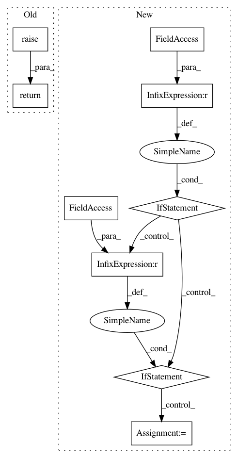

f8d6e9a4eb17f17d7fe842770cf1706052350b2f,deeplift/blobs.py,MaxPool2D,_get_mxts_increments_for_inputs,#MaxPool2D#,759
Before Change
def _get_mxts_increments_for_inputs(self):
if (max_pool_deeplift_mode==MaxPoolDeepLiftMode.all_or_none):
return super(MaxPool2D, self)._get_mxts_increments_for_inputs()
else:
raise RuntimeError("Unsupported max_pool_deeplift_mode: "+
str(self.max_pool_deeplift_mode))
After Change
"single kernel don"t have approx even default vals ")
def _get_mxts_increments_for_inputs(self):
if (max_pool_deeplift_mode==MaxPoolDeepLiftMode.gradient):
return (self.
_get_input_grads_given_outgrads(out_grad=self.get_mxts()))
elif (max_pool_deeplift_mode==MaxPoolDeepLiftMode.scaled_gradient):
grad_times_diff_def = self._get_input_grads_given_outgrads(
out_grad=self.get_mxts()*self._get_diff_from_default_vars())
pcd_input_diff_default = (pseudocount_near_zero(
self._get_input_diff_from_default_vars()))
return grad_times_diff_def/pcd_input_diff_default
elif (max_pool_deeplift_mode==
MaxPoolDeepLiftMode.partial_credit_softmax):
//should be able to handle ignore_border=False but haven"t yet
assert self.ignore_border==True,\
"Current implementation assumes ignore_border is True"
//assert that strides divides pool_size...otherwise would
//need to modify the implementation
for (size, stride) in zip(self.pool_size, self.strides):
assert size%stride==0,\
"This implementation assumes stride divides pool size"
inp_def_act = self._get_input_default_activation_vars()
total_multipliers
// //create reshaped thing of zeros to add multipliers to
//rows x cols
//rows x col_stride_no x col_within_kernel
//row_stride_no x row_within_kernel x col_stride_no x col_within_kernel
// //iterate over stride number
//compute the "stations"
//station = max( max(default < output activation),
// max(activation < output activation))
// //subset the touchpoints corresponding to stride
// //reshape subset of self.input_act_vars accordingly
// //reshape subset of self.default_act_vars accordingly
// //reshape subset of self.diff-from-default accordingly
// //do arithmetic with touchpoints for stride to find the fractional contribs
// //multiply maxpool diff-from-def by fractional contrib to get each positions actual contribs
// //divide by each position"s diff-from-default to get multipliers
// //add multipliers to running sum
// //reshape multipliers back into input shape
else:
raise RuntimeError("Unsupported max_pool_deeplift_mode: "+
str(self.max_pool_deeplift_mode))
class AvgPool2D(Pool2D):
def __init__(self, avg_pool_deeplift_mode, **kwargs):
super(AvgPool2D, self).__init__(pool_mode=B.PoolMode.avg, **kwargs)
In pattern: SUPERPATTERN
Frequency: 3
Non-data size: 9
Instances
Project Name: kundajelab/deeplift
Commit Name: f8d6e9a4eb17f17d7fe842770cf1706052350b2f
Time: 2016-08-10
Author: avanti.shrikumar@gmail.com
File Name: deeplift/blobs.py
Class Name: MaxPool2D
Method Name: _get_mxts_increments_for_inputs
Project Name: SheffieldML/GPy
Commit Name: 63751de9127ab46ab0374507338e89cd3a1be78f
Time: 2017-06-01
Author: morepabl@amazon.com
File Name: GPy/inference/latent_function_inference/expectation_propagation.py
Class Name: EP
Method Name: inference
Project Name: SheffieldML/GPy
Commit Name: 0c248e752052e18d2467d0e95f07046a666ae817
Time: 2017-03-22
Author: morepabl@amazon.com
File Name: GPy/inference/latent_function_inference/expectation_propagation.py
Class Name: EP
Method Name: inference